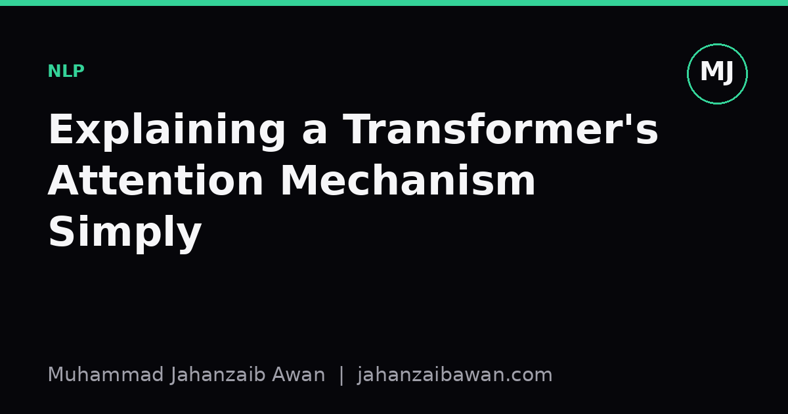

Explaining a Transformer's Attention Mechanism Simply
A practical way to describe attention without equations, built around a story an interviewer can picture and remember.

Why this question comes up so often
Interviewers who are not technical still want to know that you can reason about how a model actually works, not just that you can call a library function. Attention is usually the thing they have heard the word for, because it appears in almost every popular explanation of large language models, so they ask about it as a proxy for whether you truly understand your own field. The trap is answering with matrices, dot products, and softmax straight away. That is correct, but it teaches nothing to someone without the maths, and it often reads as evasive rather than expert.
The better goal is to give an explanation that is honest about the mechanism while using no notation at all. I have found that the cleanest way to do this is with a small story about attention in the everyday sense of the word, because the technical trick genuinely is a formalisation of that everyday idea. If the analogy is chosen carefully, you are not simplifying to the point of being wrong, you are just removing the arithmetic and keeping the logic intact.
The room-full-of-conversations analogy
Picture a translator standing in a room full of people, trying to understand the sentence someone just said. To understand any single word properly, the translator does not look at that word in isolation. They glance around the room at every other word in the sentence and ask, silently, how relevant is this other word to making sense of the one I am focused on right now. Some words get a long, careful glance, others barely register.
Take the sentence: 'The trophy did not fit in the suitcase because it was too big.' To understand what 'it' refers to, a reader has to weigh up both 'trophy' and 'suitcase'. Attention is the part of the model that does exactly this weighing. For the word 'it', the model ends up paying something like seventy per cent of its attention to 'trophy', twenty per cent to 'suitcase', and the rest spread thinly across everything else, because the sentence structure and the word 'big' make trophy the more sensible referent. Change 'big' to 'small' and that balance flips, with most of the attention shifting to 'suitcase' instead.
What I stress to a non-technical interviewer is that this weighing happens for every single word against every other word in the sentence, all at once, and the weights are not fixed rules someone programmed. They are learned from seeing enormous numbers of sentences during training, so the model gradually discovers on its own that pronouns tend to depend on nearby nouns, that verbs depend on their subjects, and thousands of subtler patterns nobody explicitly wrote down.
This is also the moment to mention, briefly, why this replaced older approaches. Before attention became standard, models read sentences roughly in order, word by word, carrying a kind of running memory forward. That memory tended to get overloaded on long sentences, rather like trying to summarise a long paragraph after only being allowed to remember one short sentence's worth of notes as you go. Attention lets the model look back at the original words directly, however far away they are, instead of relying on a compressed memory.
Handling the follow-up questions
A good interviewer will push a bit further, and it helps to have simple, honest answers ready rather than retreating into jargon. If they ask why the model needs to look at every word rather than just nearby ones, I explain that meaning in language often depends on words that are far apart, as with the trophy and suitcase example, so a method that only looks at neighbours would miss exactly the cases that matter most.
If they ask how the model learns which words matter, I say plainly that it is trial and error at enormous scale. During training, the model guesses, checks its guess against real text, and adjusts its internal weighing very slightly each time it is wrong, repeated across billions of examples. Nobody hand-writes the rule that 'it' should attend to 'trophy'. The pattern emerges because getting that kind of thing right consistently helps the model predict text more accurately, which is the only thing it is actually being trained to do.
If they ask why it is called 'attention' at all, I point out that the name is meant loosely in the human sense, the same way we say a reader pays more attention to the subject of a sentence than to a stray comma. It is a reasonable name for the behaviour, even if the underlying mechanics are numerical rather than psychological. I am careful not to claim the model 'understands' or 'thinks about' the sentence the way a person does, since overclaiming here is a common way technical people accidentally mislead non-technical audiences.
What actually matters in the answer
The measure of a good explanation here is not how simple it sounds but whether it survives a follow-up question without contradicting itself. The room-full-of-conversations story works because it maps onto the real mechanism precisely enough: relevance weighing between every pair of words, learned from data, used to build a better representation of each word in context. Nothing in that story needs to be walked back once someone learns the equations later.
What I try to avoid is the opposite failure, where the analogy is so loose that it falls apart under a second question, for instance describing attention as the model 'reading the whole sentence at once' without explaining that different words get different weights. That version sounds fine until someone asks why word order or distance would ever matter, and there is no honest way to answer using that looser framing.
My practical takeaway is this: prepare one concrete sentence like the trophy and suitcase example in advance, know exactly why the attention weights would shift if a single word changed, and be ready to say plainly that the weights are learned rather than programmed. That combination, a vivid example, a clear mechanism, and honesty about how it is learned, tends to satisfy technical and non-technical interviewers alike, because it is not a simplification that hides the truth, it is the truth with the arithmetic left out.